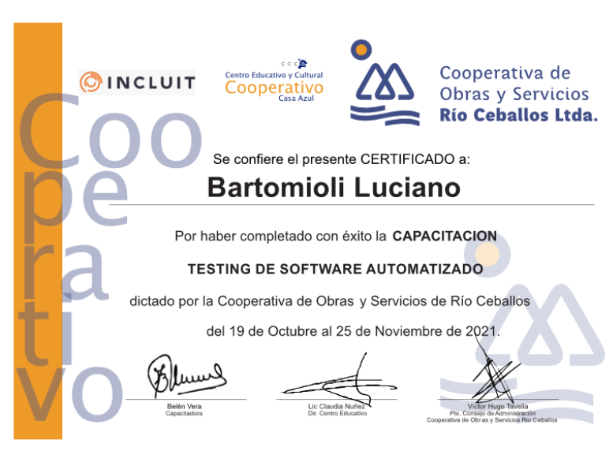
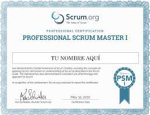

Sobre Mi
Soy un tester manual analítico y proactivo con muchas ganas de aprender y poder desarrollar mis habilidades en el mundo IT. Puedo desenvolverme perfectamente en ambientes de equipo y me adapto con facilidad a los requerimientos. Me apasiona la programación y actualmente estoy incursionando en el área de QA Automation. Estoy en busca de oportunidades que me mantengan en constante práctica y aprendizaje.
Historial academico
| Nombre | Año inicio | Año finalizacion | Titulo | |
|---|---|---|---|---|
| Instituto Industrial Cristo Obrero | 2012 | 2019 | Tecnico Mecanico | |
| Instituto Remedios Escalada de San Martin | 2020 | Cursando | Analista en Sistemas |
Habilidades
- Proactivo
- Responsable
- Analitico
- Autodidacta
- Resolucion de problemas
- Empatia
Conocimientos
| Python | |
| Selenium | |
| SQL | |
| MySQL | |
| POO | |
| UML | |
| SCRUM | |
| Django | |
| Ingles |
Cursos y certificaciones


Contacto
- Telefono:
- Correo:
- Linkedin:
- 3541-605032
- Bartomioliluciano@gmail.com
- Luciano-Bartomioli